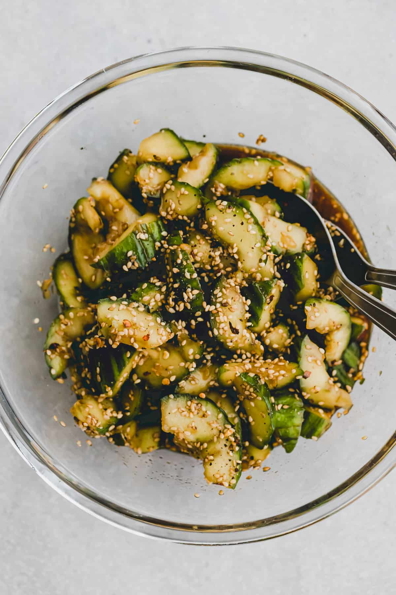

CUCUMBER-SALAD

Gurkensalat
Dieser asiatische Gurkensalat ist eins meiner Go-To Rezepte! Er eignet sich hervorragend als Vorspeise oder Beilage
zu asiatischen Gerichten. Er ist so einfach und schnell zubereitet und kommt mit wunderbaren asiatischen Aromen
daher.
Das Dressing besteht aus drei simplen Zutaten: Sojasauce, Aceto Balsamico, und Sesamöl.
Die Krönung macht aber das gemörserte und angeröstete Sesamtopping mit Chiliflocken und schwarzem Pfeffer aus.
Eine herrliche Kombination mit Pfiff.
Falls du scharf nicht magst, kannst du die Chiliflocken auch ganz einfach weglassen.
Zutaten:
- 2 Gurken
- ½ TL Salz
- 2 EL Sesam
- ½ TL Chiliflocken
- ½ TL schwarzer Pfeffer
- 2 EL Sojasauce
- 2 TL Sesamöl
Zubereitung
- Die Gurken mit einer Gabel einkratzen, dann auf ein Schneidebrett legen und mit der Faust flach drücken.
Gurken grob schneiden und währenddessen immer drehen (dies ist eine japanische Technik und hilft,
dass die Gurke mehr von der Sauce aufnehmen kann).
- Gurken und Salz von Hand gut mischen und über einem Sieb für 10 Minuten abtropfen lassen.
- Sesam, Chiliflocken, und schwarzer Pfeffer in einem Mörser leicht zerstossen
und dann in einer Pfanne bei mittlerer Hitze für 5 Minuten duftend anrösten.
- Restliches Wasser der Gurken von Hand ausdrücken, in eine Schüssel geben, und mit Sojasauce,
Aceto Balsamico, und Sesamöl mischen. Sesammischung darüber verteilen und servieren!
- GENIESSEN!